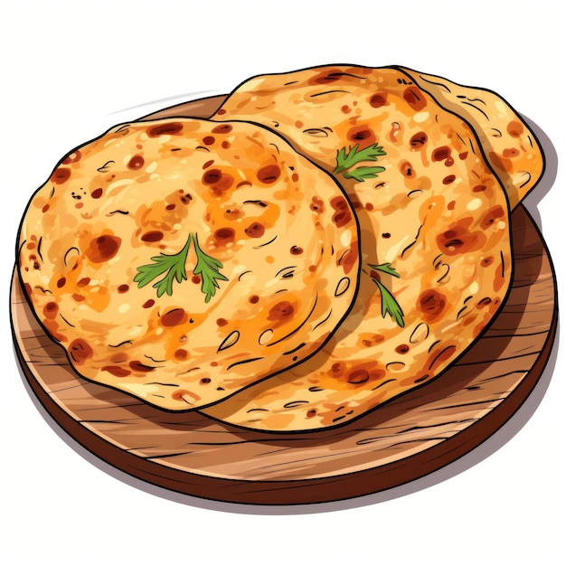

Aloo Paratha

Description
Aloo Paratha is a delicious Indian flatbread stuffed with spiced mashed potatoes.
Ingredients
For the dough
- 2 cups whole wheat flour (atta)
- Water, as needed
- Salt, to taste
For the potato filling
- 3 medium-sized potatoes, boiled and mashed
- 1 small onion, finely chopped
- 2 green chilies, finely chopped (adjust according to your spice preference)
- 1 teaspoon ginger-garlic paste
- 1/2 teaspoon cumin seeds
- 1/2 teaspoon turmeric powde
- 1 teaspoon red chili powder (adjust according to your spice preference)
- 1/2 teaspoon garam masala
- Salt, to taste
- Fresh coriander leaves, chopped (optional)
- Ghee or oil, for cooking
Steps
Making the dough
- In a large mixing bowl, add whole wheat flour and salt. Mix well.
- Slowly add water little by little and knead into a smooth and soft dough. The dough should not be too hard or too soft. Cover the dough and let it rest for about 20-30 minutes.
Making the potato filling
- In another bowl, mix together mashed potatoes, chopped onions, green chilies, ginger-garlic paste, cumin seeds, turmeric powder, red chili powder, garam masala, salt, and chopped coriander leaves (if using). Mix everything well to make a uniform filling.
Making the parathas
After the dough has rested, divide it into equal-sized portions and roll them into smooth balls.
- Take one dough ball, dust it with some flour, and roll it out into a small circle, about 4-5 inches in diameter.
- Place a portion of the potato filling in the center of the rolled-out dough circle.
- Bring the edges of the dough together and seal the filling inside, shaping it into a ball again.
- Dust the stuffed ball with flour and roll it out gently into a circle, about 6-7 inches in diameter. Be careful not to break the dough and let the filling come out.
- Heat a skillet or tawa over medium heat and place the rolled-out paratha on it.
- Cook until brown spots start to appear on one side, then flip the paratha and cook the other side.
- Apply ghee or oil on both sides while cooking until the paratha is golden brown and cooked evenly.
- Repeat the process with the remaining dough balls and potato filling to make more parathas.
- Serve hot with yogurt, pickle, or any chutney of your choice.